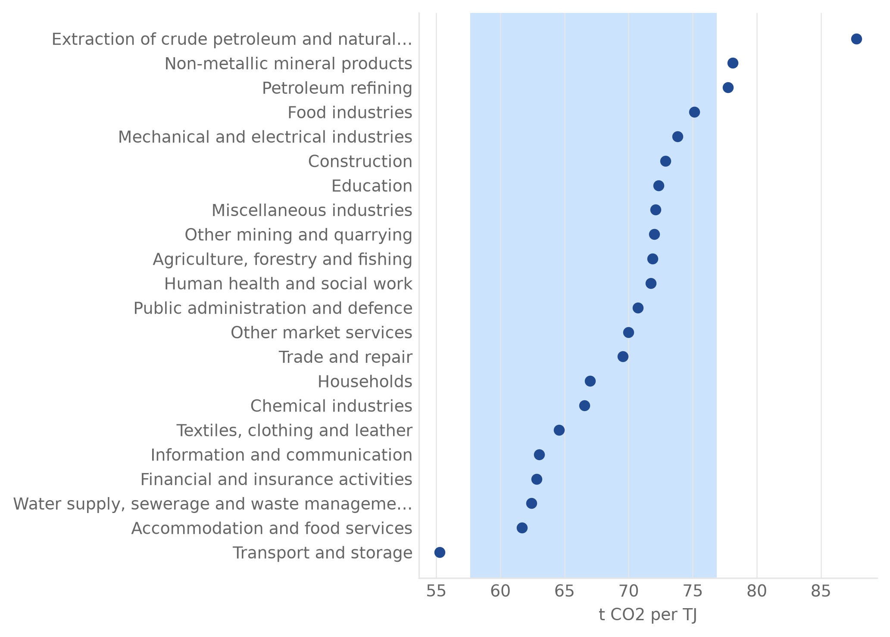
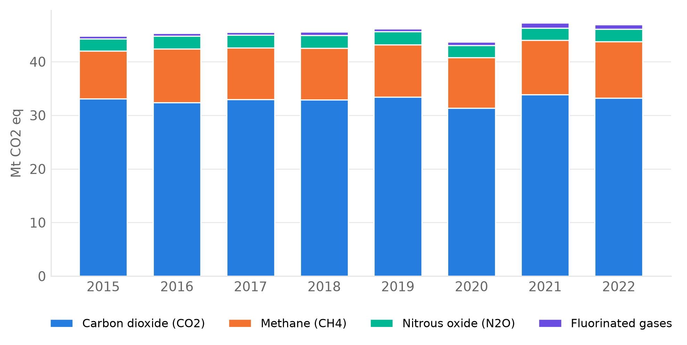
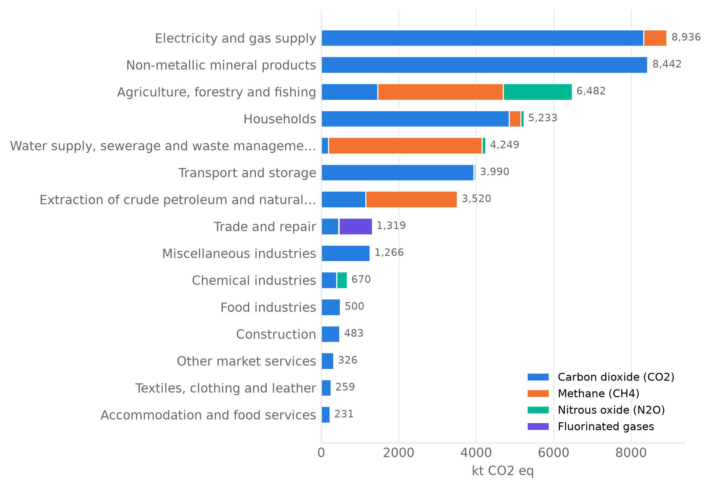
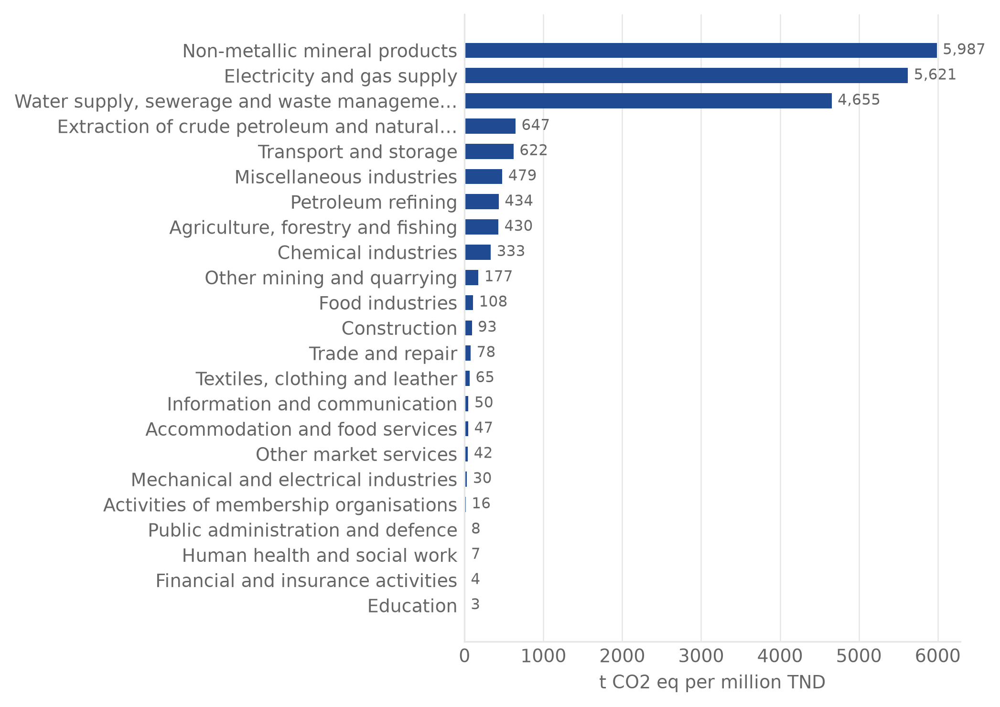

| Script | Purpose |
|---|---|
| extract/02_extract_crt_inventory.py | Common reporting tables of the greenhouse gas inventory |
| extract/03_extract_supply_use_tables.py | Supply and use tables of the national accounts |
| pefa/11_build_activity_keys.py | Keys for road transport and the tertiary sector (from the energy accounts) |
| aea/20_prepare_ghg_inventory.py | Emissions by category and gas, scope and tool codes |
| aea/21_build_conversion_matrix.py | Tunisian conversion matrix from inventory categories to activities |
| aea/22_compile_aea_tables.py | Emissions by activity, with residence adjustments, checked against I2A |
| aea/23_bridge_and_indicators.py | Bridge to the inventory, plausibility and intensities |
| aea/24_export_aea.py | Excel workbooks in English, French and Arabic |
| report/30_publish_tables.py | Tables and labels for the documents and the data explorer |
Air Emissions Accounts for Tunisia
Greenhouse gases by industry and households: concepts, compilation methods and results, 2015 to 2022
Summary
Air emissions accounts (AEA) record the greenhouse gases emitted by each industry of the national accounts and by households, following the same rules as the national accounts. They answer a question that the greenhouse gas inventory, organised by technical process, does not answer directly: which parts of the economy produce the emissions, and how much they emit per dinar of output. This document explains the concepts, describes each step of a reproducible compilation of the accounts for 2015 to 2022, and presents the first results.
In 2022, resident industries and households emitted 46.9 million tonnes of CO2 equivalent. Carbon dioxide made up 71% of the total and methane 22%. The largest emitters were electricity and gas supply, non-metallic mineral products and agriculture, forestry and fishing, and households emitted 11% of the total, mostly from their cars and their homes. A bridge table reconciles the accounts with the national inventory, and the compilation reproduces the IMF Air Emissions Account Converter (I2A) to within 7e-12 kilotonnes.
1 Introduction
Tunisia reports its greenhouse gas emissions to the United Nations Framework Convention on Climate Change (UNFCCC) in a national inventory, coordinated by the Agence nationale pour la maîtrise de l’énergie (ANME) for energy and industrial processes, by the Ministry of Agriculture for agriculture and land use, and by the Office national de l’assainissement (ONAS) for waste (Besbes, 2026). The inventory follows the guidelines of the Intergovernmental Panel on Climate Change (IPCC) and classifies emissions by source: fuel combustion in energy industries, road transport, enteric fermentation of livestock, landfills and so on (Intergovernmental Panel on Climate Change, 2006).
That classification serves the purpose of the inventory well, since it follows the processes that cause emissions and the methods used to estimate them. It does not say which economic units emit. Road transport emissions come from households driving their cars, from trucks of the food industry, from buses and taxis of the transport industry. Combustion in “other sectors” covers shops, hotels, offices and homes. Air emissions accounts reorganise the same emissions by the industries of the national accounts and by households (Eurostat, 2015; United Nations et al., 2014). Once emissions are recorded this way, they can be set beside output, value added, employment and the energy accounts, and they can feed economic models.
The International Monetary Fund (IMF) has developed an Excel tool for this conversion, the Air Emissions Account Converter, known as I2A (International Monetary Fund, 2026; Pegoue, 2026). This document follows its logic step by step. The calculations are carried out by Python scripts in the folder https://github.com/renatovargas/tun-pefa-aea/tree/main/scripts, listed in Table 1. Each step of the Methods section points to the entry of its script in Annex I. The emissions accounts reuse two allocation keys of the energy accounts, which are described in the companion document on physical energy flow accounts.
2 Concepts
2.1 Emissions as residual flows
The SEEA treats emissions as residual flows: substances released by economic activity that leave the economy and enter the environment (United Nations et al., 2014, Section 3.6). Air emissions accounts are the part of these accounts that concerns gases and particles released into the atmosphere. They follow the same accounting rules as the national accounts. Emissions are recorded for the economic units that generate them, namely industries, classified as in the national accounts, and households, in their role as consumers (Eurostat, 2015, paras 32 to 38). Emissions of households as producers, for example a family farm, belong to the industry concerned.
2.2 Greenhouse gases and their common unit
The accounts cover the greenhouse gases of the inventory. Carbon dioxide (CO2) comes mainly from burning fossil fuels and from some industrial processes such as cement. Methane (CH4) comes from livestock, landfills and leaks of natural gas. Nitrous oxide (N2O) comes mainly from agricultural soils and manure. Fluorinated gases (HFCs, PFCs, SF6 and NF3) are industrial gases used in refrigeration, air conditioning and electrical equipment. Each gas warms the climate to a different degree, so emissions are converted into CO2 equivalent with global warming potentials over 100 years. Tunisia, like most countries, uses the values of the Fifth Assessment Report of the IPCC, in which one tonne of methane counts as 28 tonnes of CO2 and one tonne of nitrous oxide as 265 (Intergovernmental Panel on Climate Change, 2013).
2.3 Territory and residence
The inventory records emissions that occur on the national territory, whoever causes them. The accounts record emissions caused by resident units, wherever they occur (Eurostat, 2015, paras 33 to 37). A Tunisian airline flying from Paris to Montreal emits into the Tunisian accounts, while a foreign truck crossing Tunisia does not. The difference concerns mainly international transport. The accounts make it explicit in a bridge table, which starts from the total of the accounts, subtracts emissions of residents abroad, adds those of non-residents on the territory, and arrives at the total of the inventory (Eurostat, 2015, paras 227 to 230). Figure 1 shows how the two totals relate.
flowchart LR AEA["Accounts total<br/>(industries + households,<br/>residence principle)"] --> M1["minus residents abroad<br/>(air and sea transport)"] M1 --> P1["plus non-residents<br/>on the territory"] P1 --> INV["Inventory total<br/>excluding LULUCF<br/>(territory principle)"] INV --> L["plus land use, land-use<br/>change and forestry"] L --> NET["Inventory net total"]
2.4 What the accounts leave out
Two items of the inventory stay outside the accounts. Emissions and removals from land use, land-use change and forestry (LULUCF) are not attributed to economic activity in the accounts and appear only in the bridge table (Eurostat, 2015, para 269). In Tunisia this sector is a net sink, with -10.8 million tonnes of CO2 equivalent in 2022, mostly from forests. Carbon dioxide from burning biomass, such as firewood, is a memo item in the inventory, since the carbon was recently taken from the atmosphere. It is kept apart in the accounts as well (4.4 million tonnes in 2022).
3 Data sources
The greenhouse gas inventory is the main source. Tunisia reports it in the common reporting tables (CRT), one Excel workbook per year. Each workbook contains a sheet named Data, which holds every reported value in long format: activity data in terajoules and emissions in kilotonnes, by category, fuel and gas, about twelve thousand rows per year. A summary sheet, Summary2, gives the totals by category in CO2 equivalent. The accounts cover 2015 to 2022.
A second file, Tunisia_UNFCCC.xlsx, was prepared in the layout of the I2A tool. It holds the main categories in kilotonnes of each gas. The pipeline builds its input from the CRT workbooks instead, because they are more detailed, include fluorinated gases and give CO2 equivalents. Its sector totals match the CRT tables (Table 2), which confirms that both describe the same inventory.
The supply and use tables of the INS provide the 24 industries of the accounts, the allocation keys and the output and value added of each industry. The OECD estimates of air and maritime transport emissions, shipped with the I2A tool, provide the emissions of resident airlines and shipping companies, for the residence adjustment (OECD, 2024).
4 Methods
4.1 Preparing the inventory
The script 02_extract_crt_inventory.py stacks the Data sheets, removes exact duplicate rows, and compares the emissions added up by category with the totals of Summary2. They match for every category, gas and year, with one exception: nitrous oxide from category 1.B.2.b.ii, reported in Data from 2019 but not counted in Summary2, a difference of at most 0.24 kilotonnes of CO2 equivalent.
The script 20_prepare_ghg_inventory.py then builds a table of emissions by year, category and gas. CO2, CH4 and N2O come from Data and are weighted by their warming potentials. Fluorinated gases are reported in Data gas by gas but in CO2 equivalent only by industrial category in Summary2, so their totals come from Summary2. Each row is marked as part of the inventory total, LULUCF, or memo item. The inventory total, including LULUCF, equals the net total of Summary2 once the nitrous oxide above is taken into account.
The I2A tool knows a list of category codes that stops at the fifth level of the CRT classification, while the Tunisian Data sheet sometimes goes further, for example by animal sub-category. Each category therefore receives the most detailed code of the tool’s list to which it belongs.
| Sector | Description | Gas in the file | Prepared file | CRT tables |
|---|---|---|---|---|
| 1 | Energy | CH4 | 127.9 | 127.9 |
| 1 | Energy | CO2 | 27,068.6 | 27,068.6 |
| 1 | Energy | N20 | 1.0 | 1.0 |
| 2 | Industrial Processes and Product Use | CH4 | 0.0 | 0.0 |
| 2 | Industrial Processes and Product Use | CO2 | 5,006.3 | 5,006.3 |
| 2 | Industrial Processes and Product Use | N20 | 1.0 | 1.0 |
| 3 | Agriculture | CH4 | 105.6 | 105.6 |
| 3 | Agriculture | CO2 | 0.0 | 0.0 |
| 3 | Agriculture | N20 | 6.4 | 6.4 |
| 5 | Waste | CH4 | 141.7 | 141.7 |
| 5 | Waste | CO2 | 26.9 | 26.9 |
| 5 | Waste | N20 | 0.4 | 0.4 |
NoteOpen question
The file Tunisia_UNFCCC.xlsx writes nitrous oxide as “N20”, reports kilotonnes of each gas rather than CO2 equivalent, omits some sub-categories and has no fluorinated gases. If it is to serve other purposes, it would be worth revising with the inventory team. The treatment of nitrous oxide in category 1.B.2.b.ii from 2019 is also worth clarifying.
4.2 From inventory categories to economic activities
The conversion matrix gives, for each inventory category, the share of its emissions that goes to each economic activity. The I2A tool comes with a default matrix by ISIC section and households, which follows the correspondence of the Eurostat manual (Eurostat, 2015, para 12; International Monetary Fund, 2026). The script 21_build_conversion_matrix.py builds a Tunisian matrix by the 24 industries of the supply and use tables and households, from the lookup table crt_to_activities.csv. Each row of that table gives a prefix of CRT codes, an activity and a reason. A category takes the row with the longest prefix that matches its code, so that a short prefix (“3” for agriculture) covers a whole sector and a longer one overrides it for a sub-category.
Most categories belong to one activity: public electricity production to electricity and gas (35), cement production to building materials (23), enteric fermentation to agriculture (01), landfills to water and waste services (36). Two categories need keys, and they reuse those of the energy accounts, so that both accounts split these sectors in the same way. Road transport (1.A.3.b) is shared between industries and households in proportion to their purchases of refined petroleum products, and combustion in commerce and public services (1.A.4.a) is shared among service industries in proportion to their purchases of electricity and gas. In 2022, households receive 34% of road transport emissions.
Table 3 lists the categories that the Tunisian matrix assigns to a different section than the default matrix of the tool, with their emissions in 2022.
| Category | Emissions | Default | Tunisia | Tunisian activities | Note |
|---|---|---|---|---|---|
| 1.A.1.c.i | 792.4 | C | B | 06 | Different section |
| 1.A.2.g.iii | 15.7 | C | B | 07 | Different section |
| 1.A.3.b.i | 4,271.8 | H | HH | key: Road | Different section |
| 1.A.3.b.ii | 1,884.7 | H | HH | key: Road | Different section |
| 1.A.3.b.iii | 1,349.4 | H | HH | key: Road | Different section |
| 1.A.3.b.iv | 8.0 | H | HH | key: Road | Different section |
| 1.A.4.a.i | 765.3 | F | Other | key: Commercial and public services | Different section |
| 1.A.4.b.ii | 2,646.7 | F | HH | HH | Different section |
| 1.B.1.b | 284.1 | B | A | 01 | Different section |
| 1.B.2.b.iv | 495.3 | H | D | 35 | Different section |
| 1.B.2.b.v | 99.6 | H | D | 35 | Different section |
| 2.F.1.a | 862.8 | C | Other | 45 | Different section |
| 2.G.1 | 9.0 | C | D | 35 | Different section |
| 3.D.1.a | 294.0 | – | A | 01 | No factor in the default matrix |
| 3.D.1.b.i | 299.6 | – | A | 01 | No factor in the default matrix |
| 3.D.1.c | 453.8 | – | A | 01 | No factor in the default matrix |
| 3.D.1.d | 63.6 | – | A | 01 | No factor in the default matrix |
| 3.D.2.a | 172.1 | – | A | 01 | No factor in the default matrix |
| 3.D.2.b | 198.7 | – | A | 01 | No factor in the default matrix |
Three groups stand out. Road transport and residential combustion move from transport and construction to households, as the accounts require. Natural gas transmission and distribution move from transport to the electricity and gas industry, which operates the network in Tunisia. And the default matrix of the tool has no factors for agricultural soils (3.D), so their emissions, 1,482 kilotonnes of CO2 equivalent in 2022, would be lost without a Tunisian rule. The Tunisian matrix assigns them to agriculture.
NoteOpen question
The choices that depart from the default matrix would benefit from validation with the INS and ANME, in particular the split of road transport between industries and households, the allocation of commercial combustion to service industries rather than construction, and the treatment of fluorinated gases from commercial refrigeration.
4.3 Compiling the accounts and the residence adjustment
The script 22_compile_aea_tables.py applies the matrix to the inventory. As for the energy accounts, it does so twice: once by calling the function I2A of the tool unchanged, and once by applying each of its rules explicitly. The explicit version produces the accounts, and the script stops if the two differ by more than 10-9 kilotonnes. The rules are the following.
- Inventory input. The inventory is laid out as the tool’s inventory sheet: one row per gas and category, one column per year, in kilotonnes of CO2 equivalent.
- Allocation. Each value is multiplied by the factors of its category in the matrix. A category without factors receives nothing, which is why agricultural soils needed a Tunisian rule.
- Air transport. The OECD estimates emissions of resident airlines on domestic flights and abroad (OECD, 2024). Where the OECD figure for domestic flights is lower than domestic aviation in the inventory, the difference is attributed to non-residents on the territory. Emissions of resident airlines abroad are added to air transport and recorded as a bridging item.
- Maritime transport. Where the OECD estimate for resident vessels exceeds domestic navigation in the inventory, the difference is added to the activity.
- Totals. The accounts total adds up industries and households, and the greenhouse gas total adds up the four gases.
Run with its default matrix, with and without OECD data, and with the Tunisian matrix for every year, the explicit version agrees with the tool to within 7e-12 kilotonnes (Table 4).
| Run | Years | Largest gap (kt CO2 eq) |
|---|---|---|
| Default matrix, without OECD data | all | 7.3e-12 |
| Default matrix, with OECD data | all | 7.3e-12 |
| Tunisian matrix, with OECD data | 2015 | 7.3e-12 |
| Tunisian matrix, with OECD data | 2016 | 1.8e-12 |
| Tunisian matrix, with OECD data | 2017 | 3.6e-12 |
| Tunisian matrix, with OECD data | 2018 | 7.3e-12 |
| Tunisian matrix, with OECD data | 2019 | 7.3e-12 |
| Tunisian matrix, with OECD data | 2020 | 3.6e-12 |
| Tunisian matrix, with OECD data | 2021 | 7.3e-12 |
| Tunisian matrix, with OECD data | 2022 | 7.3e-12 |
NoteOpen question
The OECD estimate for vessels operated by residents (546 kilotonnes of CO2 in 2022) is much larger than the marine bunkers of the inventory (24 kilotonnes), and it is missing before 2019, which creates a break in the series. It would be worth comparing it with data on the Tunisian fleet and its refuelling abroad held by the INS, ONEM and the Office de la marine marchande et des ports.
4.4 Bridge table and checks
The script 23_bridge_and_indicators.py builds the bridge table of Table 5. Starting from the accounts total, it subtracts emissions of resident carriers abroad, adds those of non-residents on the territory, and must reach the inventory total excluding LULUCF. The gap is below 10-6 kilotonnes in every year and gas. Two features of the tool are worth noting, and the pipeline handles both. The positive gap of maritime transport is added to the activity without a matching bridging item, so the pipeline records it as residents abroad on water. And the tool’s own inventory total adds the bridging items without their sign; the bridge table uses the signed sum.
| Item | 2015 | 2016 | 2017 | 2018 | 2019 | 2020 | 2021 | 2022 |
|---|---|---|---|---|---|---|---|---|
| Air emissions accounts (resident units) | 44,797 | 45,299 | 45,513 | 45,574 | 46,158 | 43,690 | 47,213 | 46,921 |
| Less: air transport of residents abroad | 556 | 592 | 700 | 808 | 745 | 246 | 288 | 564 |
| Less: water transport of residents abroad | 0 | 0 | 0 | 0 | 498 | 502 | 540 | 546 |
| Plus: air transport of non-residents on the territory | 0 | 0 | 0 | 0 | 4 | 0 | 0 | 0 |
| Plus: water transport of non-residents on the territory | 0 | 0 | 0 | 0 | 0 | 0 | 0 | 0 |
| Other adjustments | −5 | −4 | −4 | −2 | 0 | −1 | −4 | 0 |
| National inventory excluding LULUCF | 44,236 | 44,704 | 44,809 | 44,765 | 44,919 | 42,941 | 46,381 | 45,812 |
| Land use, land-use change and forestry (LULUCF) | −9,944 | −9,956 | −10,192 | −10,341 | −10,564 | −10,563 | −10,500 | −10,784 |
| National inventory including LULUCF | 34,292 | 34,748 | 34,616 | 34,424 | 34,354 | 32,378 | 35,881 | 35,028 |
The script also checks the allocation against the energy accounts. For each activity, the CO2 emitted by fuel combustion divided by the fossil energy that the energy accounts assign to it gives an implied emission factor, in tonnes of CO2 per terajoule. Implied factors by fuel in the inventory range from 57.7 for natural gas to 76.8 for liquid fuels in 2022, so an activity’s factor should fall within or near that range. Figure 2 shows the result.

Most activities fall inside the band. Activities outside it point to differences of classification between the energy balance and the inventory, for example for the own use of the energy industries and for electricity autoproducers, which are worth reviewing with ONEM and ANME.
4.5 Indicators and export
Emission intensities divide emissions by output or value added at current prices, in tonnes of CO2 equivalent per million dinars. For households, the denominator is their final consumption expenditure, as the I2A manual suggests (International Monetary Fund, 2026). The script 24_export_aea.py writes the accounts to Excel workbooks in English, French and Arabic, with the long table, the bridge table, the accounts of each year by activity and gas, the emissions by source and activity, and the indicators.
5 Results
5.1 Emissions over time and by gas
Figure 3 shows emissions of resident units by gas. They stayed close to 45 million tonnes of CO2 equivalent over the period, with a dip in 2020, when activity and travel fell during the COVID-19 pandemic.

5.2 From inventory sectors to the economy
Figure 4 follows emissions of 2022 from the sectors of the inventory to the sections of the economy that emit them. Fuel combustion spreads over every part of the economy. Industrial processes come almost entirely from manufacturing, mainly cement. Agricultural emissions stay in agriculture, and waste emissions go to the water and waste industry. The residence adjustment adds the emissions of Tunisian carriers abroad to transport.
5.3 Emissions by activity
Figure 5 ranks the emitters of 2022. Electricity and gas supply leads, followed by building materials, where cement kilns emit both from fuel and from the chemical transformation of limestone. Agriculture comes next, through livestock and soils, then households. Water and waste services owe their place to landfills.

5.4 Emission intensity
Across all industries, the economy emitted 326 tonnes of CO2 equivalent per million dinars of value added in 2022. Figure 6 shows how unevenly this is spread. A few industries, building materials, electricity, water and waste, and agriculture, emit far more per dinar than the rest. Policies that change the output of these industries, or the technology they use, have the largest effect on national emissions.

5.5 Accounts by activity and gas
| Activity | Carbon dioxide (CO2) | Methane (CH4) | Nitrous oxide (N2O) | Fluorinated gases | Total greenhouse gases |
|---|---|---|---|---|---|
| Agriculture, forestry and fishing | 1,459.3 | 3,239.3 | 1,783.1 | 0.0 | 6,481.6 |
| Extraction of crude petroleum and natural gas | 1,148.0 | 2,368.9 | 2.8 | 0.0 | 3,519.7 |
| Other mining and quarrying | 222.2 | 0.9 | 4.0 | 0.0 | 227.2 |
| Food industries | 495.4 | 0.9 | 3.5 | 0.0 | 499.9 |
| Textiles, clothing and leather | 256.7 | 0.5 | 2.1 | 0.0 | 259.3 |
| Petroleum refining | 144.9 | 1.6 | 0.2 | 0.0 | 146.8 |
| Chemical industries | 399.3 | 0.9 | 270.0 | 0.0 | 670.2 |
| Non-metallic mineral products | 8,422.9 | 8.6 | 10.5 | 0.0 | 8,441.9 |
| Mechanical and electrical industries | 202.0 | 0.7 | 3.2 | 0.0 | 205.9 |
| Miscellaneous industries | 1,261.6 | 1.2 | 2.7 | 0.0 | 1,265.6 |
| Electricity and gas supply | 8,324.6 | 598.7 | 3.8 | 9.0 | 8,936.1 |
| Water supply, sewerage and waste management | 184.4 | 3,967.7 | 96.5 | 0.0 | 4,248.6 |
| Construction | 472.3 | 2.1 | 9.1 | 0.0 | 483.5 |
| Trade and repair | 446.9 | 2.4 | 6.6 | 862.8 | 1,318.7 |
| Transport and storage | 3,937.9 | 10.0 | 42.1 | 0.0 | 3,990.1 |
| Accommodation and food services | 228.2 | 1.9 | 0.4 | 0.0 | 230.5 |
| Information and communication | 199.3 | 1.5 | 0.8 | 0.0 | 201.7 |
| Financial and insurance activities | 24.5 | 0.2 | 0.1 | 0.0 | 24.8 |
| Public administration and defence | 129.3 | 0.7 | 2.1 | 0.0 | 132.1 |
| Education | 30.1 | 0.1 | 0.6 | 0.0 | 30.8 |
| Human health and social work | 40.5 | 0.2 | 0.7 | 0.0 | 41.4 |
| Other market services | 319.6 | 1.7 | 4.9 | 0.0 | 326.1 |
| Activities of membership organisations | 5.2 | 0.0 | 0.1 | 0.0 | 5.3 |
| Households | 4,856.1 | 294.9 | 82.1 | 0.0 | 5,233.1 |
6 Limitations
These accounts are a first, provisional compilation. The split of road transport and of commercial combustion rests on money purchases rather than on physical data. The residence adjustment relies on OECD estimates, which are modelled rather than observed and which, for maritime transport, start only in 2019. Fluorinated gases are allocated by category, without detail by species. Air pollutants other than greenhouse gases, such as sulphur dioxide or particles, are not covered, since the inventory holds few of them. Intensities at current prices mix volume and price changes. Each of these points can be improved as more detailed data become available, and the pipeline makes it simple to run the accounts again after any change in a lookup table.
References
Besbes, M. (2026). Tunisian GHG inventory and climate policy. Presentation at the virtual workshop on energy and air emissions accounts, National Agency for Energy Conservation, Tunisia.
Eurostat. (2015). Manual for air emissions accounts: 2015 edition. Publications Office of the European Union.
Intergovernmental Panel on Climate Change. (2006). 2006 IPCC guidelines for national greenhouse gas inventories (H. S. Eggleston, L. Buendia, K. Miwa, T. Ngara, & K. Tanabe, Eds.). Institute for Global Environmental Strategies.
Intergovernmental Panel on Climate Change. (2013). Climate change 2013: The physical science basis. Contribution of working group I to the fifth assessment report of the intergovernmental panel on climate change. Cambridge University Press.
International Monetary Fund. (2026). Air emissions account converter: A framework for converting greenhouse gas emissions inventories into air emissions account. User manual (Version 0.0). Statistics Department, Real Sector Division.
OECD. (2024). Air and maritime transport CO2 emissions. OECD Data Explorer, datasets DSD_AIR_TRANSPORT and DSD_MARITIME_TRANSPORT.
Pegoue, A. (2026). Air emissions account converter (I2A): Excel workbook and Python function I2A (Version 0.0) [Computer software]. International Monetary Fund, Statistics Department. https://github.com/renatovargas/tun-pefa-aea/tree/main/imf-tools/i2a
United Nations, European Commission, Food and Agriculture Organization of the United Nations, International Monetary Fund, Organisation for Economic Co-operation and Development, & World Bank. (2014). System of environmental-economic accounting 2012: Central framework. United Nations.
Annex I. Scripts of the pipeline
This annex describes each script that the emissions accounts use, in the order in which it runs. The link under each name opens its code on GitHub. Comments in the code are in English, followed by their French translation.
02_extract_crt_inventory.py
This script stacks the Data sheet of the eight CRT workbooks, adds the year, casts values to numbers and removes exact duplicate rows. It compares emissions summed by category with sheet Summary2 and writes crt.parquet.
20_prepare_ghg_inventory.py
This script builds emissions by year, category and gas, in kilotonnes and CO2 equivalent, takes fluorinated gases from Summary2, marks the scope of each row (inventory, LULUCF, memo item) and gives each category its code in the I2A tool. It checks the inventory total against Summary2 and compares the file prepared for the tool with the CRT tables.
21_build_conversion_matrix.py
This script assigns each tool code the rule with the longest matching prefix in crt_to_activities.csv, applies the keys of the energy accounts where a rule calls for them, and writes the Tunisian conversion matrix for each year. It also lists the categories that the default matrix would drop and the departures from its sections.
22_compile_aea_tables.py
This script compiles the accounts by calling the function I2A of the tool unchanged and by applying each of its rules explicitly, including the residence adjustments based on OECD data. It runs both with the default and the Tunisian matrices and stops if they differ by more than 10-9 kilotonnes. It writes aea.parquet.
23_bridge_and_indicators.py
This script builds the bridge table and checks that it closes on the inventory, compares OECD estimates with international bunkers, computes implied CO2 factors by fuel and by activity, and derives emission intensities.
24_export_aea.py
This script writes aea-accounts-en.xlsx, aea-accounts-fr.xlsx and aea-accounts-ar.xlsx in English, French and Arabic, with labels from the lookup tables.
30_publish_tables.py
This script publishes the tables and labels read by this document, the presentations and the data explorer, in Parquet and CSV.